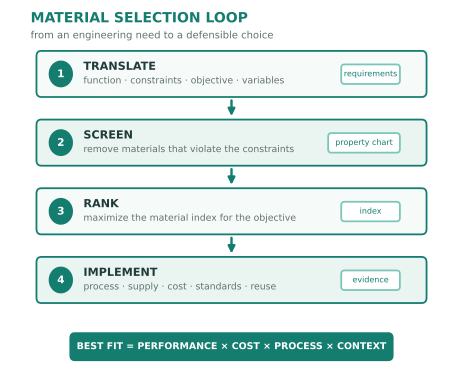
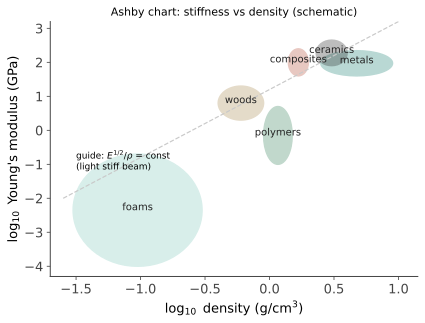

本页目录
收官 · 材料选择与设计
全站的知识在这一页收成一件可用的工具：给定一个工程需求，怎么选材？ 答案不是背材料手册，而是 Ashby 的方法——把设计要求翻译成材料指数，在性能空间里画一条线。最后用三个案例走完全程，并给这门课的世界观收尾。
学习层：把“最好材料”改写成约束、权重与 Pareto 账本
1. 具体材料工程情境：一个零件同时要轻、强、便宜、低碳
给一个结构件选 Al 6061、Ti-6Al-4V、准各向同性 CFRP、316L 或 AZ91。要求有最低屈服强度、最低服役温度、最高材料成本和最低制造可行性；在通过硬约束的候选中，再比较比强度、比刚度、成本和 embodied carbon。这里的“选中”不是发现绝对冠军，而是记录当前目标权重下的可辩护胜者，以及哪些候选构成 Pareto 前沿。
2. 必须作答的预测门：硬约束、权重与生命周期边界
揭示前回答三题：多目标选材是先把所有属性加权，还是先用硬约束淘汰？改变成本/碳/性能权重会改变加权胜者、Pareto 可行集合，还是自动放宽硬约束？每 kg embodied carbon 的数字已经覆盖使用、回收和所有系统边界，还是只代表材料生产阶段 proxy？三题完成后才显示 Pareto 图和权重敏感性账本。
3. 最小模型与假设：硬约束 + 固定范围归一化 + 加权排序
对候选 \(j\)，先检查
再在固定候选集的属性范围内归一化。以比强度 \(S_j=\sigma_{y,j}/\rho_j\) 为例，最大化量取
成本和 embodied carbon 是最小化量，取
比刚度同理。四个无量纲分数用非负权重 \(w_i\) 归一化后组成
Pareto 候选是在硬约束可行集中没有被另一候选在所有目标上不差且至少一项更好的点。归一化范围依赖当前候选集；换数据集、质量边界或几何模型，分数和前沿都可能移动。
4. 动手实验：调硬约束并做权重敏感性
JavaScript 失效时的静态 fallback：默认硬约束为最低强度 \(250 \mathrm{MPa}\)、最低温度 \(120\ ^\circ\mathrm{C}\)、最高成本 \(40 \mathrm{USD/kg}\)、制造下限 0.50；权重为强度 0.30、刚度 0.25、成本 0.15、碳 0.30。AZ91 因强度不够被淘汰；Al 6061、Ti-6Al-4V、CFRP 和 316L 可行。当前加权胜者是 CFRP；Pareto 集为 Al、Ti、CFRP、316L。低碳情景（碳权重 0.65）的胜者为 316L，高强度情景（强度权重 0.65）的胜者为 CFRP。
| 证据 | 静态结果 | 单位 / 读法 |
|---|---|---|
| 可行候选 | Al / Ti / CFRP / 316L | 先过硬约束；AZ91 不进入 Pareto |
| 当前权重 | 0.30 / 0.25 / 0.15 / 0.30 | 强度 / 刚度 / 成本 / 碳；无量纲权重 |
| 当前胜者 | CFRP | 当前候选集和权重下的加权胜者 |
| Pareto 集 | Al、Ti、CFRP、316L | 可行且未被全目标支配 |
| 低碳 / 高强度情景 | 316L / CFRP | 权重敏感性，不是硬约束变化 |
| carbon 账本 | 生产阶段 proxy | kg CO₂e/kg；不含完整 LCA |
5. 误区与模型边界：Pareto 不是免检通行证
- 一个候选在 Pareto 前沿上，只说明在声明的目标和数据范围内没有被完全支配；它仍可能无法连接、检测、采购、维修或满足疲劳/断裂/腐蚀约束。
- 归一化不是物理定律。固定范围改变、属性不确定性、几何尺寸和质量边界改变，排名都可能改变；不能把无量纲分数当成材料常数。
- embodied carbon/kg 是材料生产阶段的简化代理，不等于零件全生命周期。使用阶段节能、运输、制造废料、再生率、拆解、回收和报废边界必须另建 LCA；轻量化也只有在明确使用场景下才可抵消制造碳。
- 权重敏感性揭示“谁在替谁做决定”。若胜者对很小的权重变化就跳变，应报告候选集、证据范围和不确定性，而不是只展示一个漂亮的冠军。
6. 正式回扣：从 Ashby 图回到工程决策记录
选材的形式链是：需求翻译为约束，约束筛选候选，候选在明确几何和属性范围内归一化，Pareto 记录不可被单一权重掩盖的权衡，最后用制造、供应、连接、认证、碳边界和服役证据落地。这个流程比背一个“最佳材料”名单更能迁移到新零件。
迁移问题：若把使用阶段节能、运输距离和回收率加入碳边界，当前 CFRP/316L/Al 的 Pareto 集会怎样变？若结构必须焊接或承受缺口疲劳，你会新增哪些硬约束和实测证据，才能让加权分数不掩盖真正的失效风险？
1. Ashby 方法：四步选材
- 翻译：把需求写成 —— 功能（承受什么载荷/环境）、约束（必须满足：强度、温度、耐蚀、几何）、目标（最小化什么：质量、成本、体积）、自由变量（可调的：截面尺寸、材料）；
- 筛选：用约束在材料属性图上砍掉不合格区（例：\(T_{max} > 300\) °C、\(K_{IC} > 20\)、耐海水）；
- 排序：用材料指数给幸存者打分（下节）；
- 落地：查文档细节——可制造性、供应、成本波动、标准与认证、既往案例、回收（很多项目会在第 4 步暴露第 3 步排序没有覆盖的风险）。

2. 材料指数：把目标翻译成属性组合

推导范式（以轻质刚性梁为例）【推】：要求刚度 \(S = C\dfrac{EI}{L^3}\) 给定、最小化质量 \(m = \rho A L\)。方形截面 \(I = A^2/12\) ⇒ 由刚度约束解出 \(A \propto (S/E)^{1/2}\)，代入质量：
常用指数速查：
| 目标 | 指数 |
|---|---|
| 轻质刚性拉杆 | \(E/\rho\) |
| 轻质刚性梁 | \(E^{1/2}/\rho\) |
| 轻质刚性板 | \(E^{1/3}/\rho\) |
| 轻质强度梁 | \(\sigma_y^{2/3}/\rho\) |
| 抗热冲击 | \(\sigma_f/(E\alpha)\)（性能 IV） |
| 储能弹簧 | \(\sigma_y^2/E\) |
为什么指数的指数不同：因为几何自由度不同（拉杆调面积、梁调厚度、板调厚度但受宽度约束）——同一个"轻"的目标，换个受力形式就可能换一个最优材料：这是本方法最反直觉也最有力的地方（CFRP 在某些梁刚度比较中占优，在纯拉杆上优势可能变小）。
3. 三个案例走全程
案例 A · 自行车车架：功能=抗弯刚性梁、约束=疲劳寿命 + 可焊/可粘接 + 成本区间、目标=轻。指数 \(E^{1/2}/\rho\) ⇒ CFRP > 铝 > 钛 > 钢。但落地看第 4 步：CFRP 抗冲击损伤难检测（性能 II：内部分层）、铝疲劳无极限（性能 II 图 9.1，故壁厚要留余量）、钢便宜好修——"最优材料"随使用场景（比赛 vs 通勤 vs 山地）而变，这才是选材的真相。
案例 B · 涡轮叶片：约束=1400 °C 燃气 + 蠕变 + 高周疲劳 + 抗氧化腐蚀，目标=效率（允许高成本）。在这组约束和温度边界下，单一材料方案通常难以同时满足⇒ 系统解：镍基单晶（消除部分晶界弱点，性能 I）+ 气膜冷却（几何）+ 热障涂层（功能 III）+ 定向凝固工艺（工艺 I）——四条线的知识在一个零件上会师；下一代候选 CMC（前沿 I）。
案例 C · 手机中框：约束=刚度手感 + 天线不能全屏蔽 + 外观耐刮 + 可量产、目标=薄 + 轻 + 成本。铝合金（阳极氧化上色）与不锈钢（更刚更重更贵）之争、加塑料/玻璃分段解决天线——约束里有"外观""手感""天线"这类非力学项，正是真实工程与教科书的差别。
4. 材料的可持续性（新增的硬约束）
内含能与碳足迹（每 kg 的量级，粗略）：钢 ~2 kg CO₂ ｜ 铝原生 ~11–16（再生铝仅约 5%）｜ CFRP 更高。选材决策正在从"性能/成本"扩展为"性能/成本/碳"三维——再生率与可回收设计（单一材料、易拆解、避免难分离复合）成为新的工程约束。同时注意生命周期视角：轻量化材料的制造碳可能被使用阶段的节能抵消（汽车/飞机），也可能抵不过（低使用强度产品）——LCA 而非直觉。
5. 全课收官：三句话
- 结构决定许多性能表现——可以追问到"原子怎么排、缺陷怎么分布"，同时还要把尺度、工艺和边界条件放回证据链（线一到线四的全部内容）；
- 缺陷决定命运——工程不是消灭不完美，而是设计不完美：位错、晶界、掺杂、析出、织构、孔隙，每一个都既是弱点也是工具；
- 选材没有最优解，只有针对约束集的最优权衡——性能、成本、可制造性、供应链、碳足迹、标准与既往经验共同定标（这也是本站十四门课共有的工程世界观）。
学完之后你应该能做的三件事：看到一个零件失效，能从断口与工况倒推可能机理（性能 II + 工艺 IV）；看到一份材料牌号与热处理规程，能说出它的组织与强化机制（线二 + 性能 I）；看到一条"新材料突破"的新闻，能用四问框架判断它离你的工程有多远（前沿线）。
继续走的三个方向：深度——挑一门做扎实（推荐 Callister 打底、Porter 相变、Courtney 力学行为）；广度——与兄弟站互读（机器的力学:8091 的失效与制造、芯片的逻辑:8089 的电子材料、光的工程:8092 的光学材料）；动手——最好的材料学教育是拿一块金相试样从镶嵌、抛光、腐蚀看到组织，或跑一次 DFT/相图计算（前沿 III 的入口都是开源的）。
材料学是一门"看不见的基础设施"的学问——你身边每一件东西的性格，都是某个人在成分、工艺与结构之间做过的一次权衡。现在你能读懂这些权衡了。